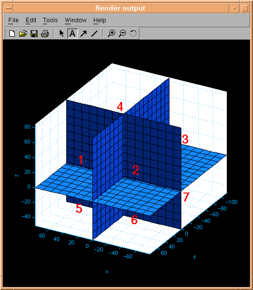
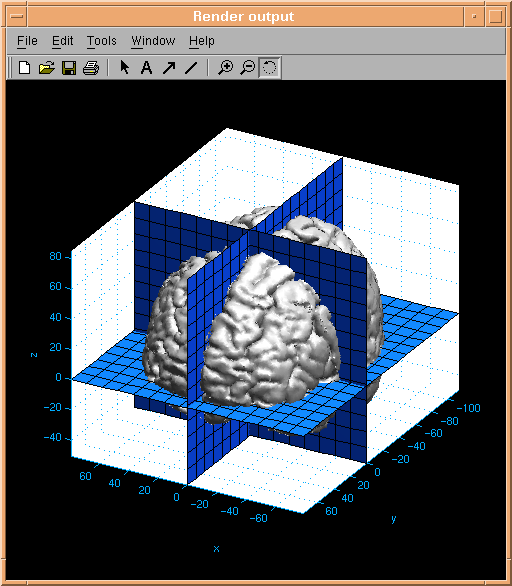
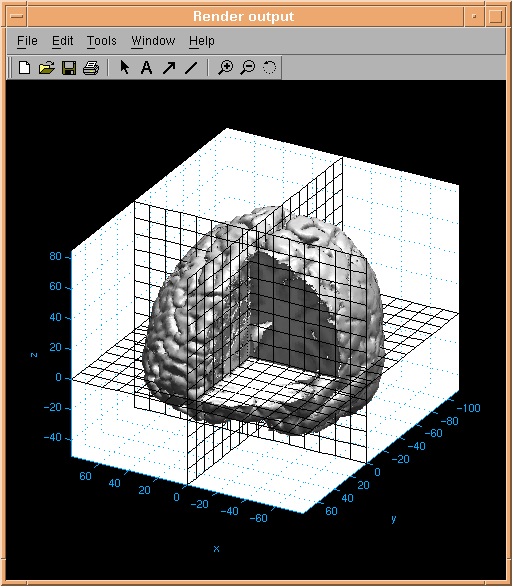

d3view Users tutorial (3): Understanding the imaging problem - anatomy
Let us imagine that an anatomical dataset has been confined to a region
of space. Next let us choose a point inside that spatial region, eg. P=(0,0,0). P defines a common
point of intersection between three axis-parallel planes:

The 3 intersecting planes define 8 octants of the data volume. The octants are enumerated according
to the right hand rule (cf. the above figure).
The brain (or perhaps skin) surface of the anatomical dataset is divided into 8 parts passing through
the 8 octants:

The visibility of the 8 parts of the brain can be controlled independently, revealing the anatomical
dataset on the crossing planes:

The brain surface and the three intersecting planes together form a 3d anatomical oject, to which data from functional activation
datasets can be added.
Next tutorial item: Understanding
the imaging problem - activation.